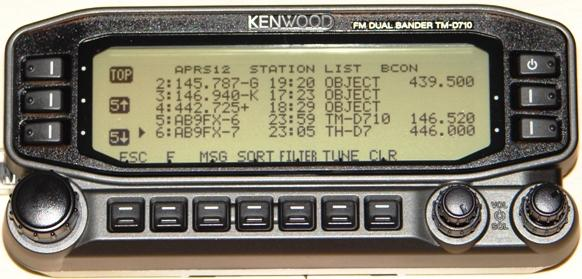
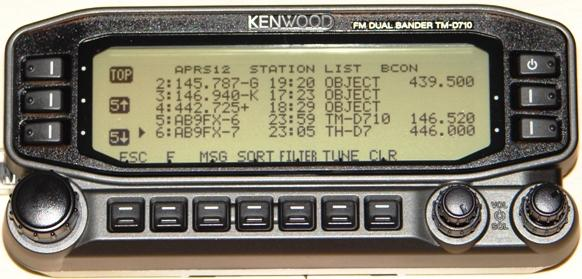

The purpose of AFRS is to have a simple national system where anyone, at any time can easily locate another station and more importantly, be able to find out what frequency he is monitoring. The incentive for adding FREQUENCY to APRS came from the ARRL's request to the Amateur Radio Community after the August 2005 Hurricane Katrina disaster in the Gulf Coast. Ham radio needed a system for locating hams and being able to contact them on the air.
With one out of every 500 people in the USA being a HAM operator we should be able to communicate easliy and efficiently and quickly. Yet, the biggest advantage of HAM radio in time of need, its thousands of available frequencies, is also its biggest stumbling block for rapid contact, making it virtually impossible to find the channel on which to contact another station.
 

In 2005, there were a number of recent initiatives that had made strides towards that objective of identifying nearby Amateur Radio Resources. In the images above, Frequency was added to APRS not only to identify nearby recommended frequencies for travelers but also to let each mobile show his present voice operating frequency as shown above. . Here are several initiatives:
{kind=link}
The purpose of this web page was to formalize these initiatives and to encourage the use of a standard Frequency reporting format, so that the operating frequencies of all these disparate systems would all appear easily and consistently on the national APRS frequency to serve as a resource for all of Amateur Radio.
AUTOMATIC RADIO INTERFACE: The ultimate objective of this initiative was to have each radio report its current operating frequency automatcially to the APRS system. But we do not have to wait for new radios! ANY radio with a serial interface for radio control can already report its frequency. All we need is new firmware for any of the many APRS Tiny-Trackers or Pocket Trackers to read out this frequency and automatically include it in the station's position report. For example, the fully-self contained POCKET TRACKER made by Byonics and Microtrak shown below fits inside an Altoids container and could simply be plugged into the serial port of a radio and mounted at roof level to put that radio's frequency information onto APRS:
EXPANDED INTERNAL VIEW
The algorithm would probably be that whenever the dial is not moved for more than 3 minutes a new Freqeuncy report will go out. Then it will be repeated LOCALLY once every 10 minutes after that. And once every 30 minutes via 2 hops.
With all these initiatives, APRS then becomes the single channel information resource for tactical real-time identification and rapidly exchanging digital data of immediate value to local operations such as frequency. The integration of APRS and other systems into the Internet made this a global resource as well. The map below shows the typical stations on the air within 100 miles of Baltimore in the mid 1990's.

Now, in 2005, there are over 100 stations within just the surounding 30 miles between Baltimore and Washington DC. The below image is a LIVE snapshot, right now, today, this minute of who is on the air in the central Maryland area on APRS:
All of these stations should have FREQUENCY information in their position reports so that other operators can quickly and efficiently contact them if needed. Here are some other LIVE maps from around the country and the world showing the global, yet LIVE aspect of APRS: -
USA MAP:........... (Whole Country, but without callsigns)
USA WEST:........
Southwest,
Northwest,
4-Corners,
Central CA,
Southern CA,
Hawaii
USA CENTRAL:
North Central,
Midwest,
South Centeral
USA EAST:........
New England,
Northeast,
Mid Atlantic,
Wash-DC,
Southeast,
Florida
WORLD:............
Europe,
S.America and Africa,
Australia/NewZealand,
Japan
Wouldn't it be nice if all those stations contained their CURRENT FREQUENCY too?
OVERALL APRS CONCEPT LINKS FOR NEW USERS:
This web page is brand new and this WEB page is in work.
But we hope you agree that simply including operating frequency
information into APRS position reports will be a valuable asset
in times of emergency.
You are visitor number: The Naval Academy is a registered user of APRS
and WinAPRS. The purpose of this web page is to show several applications
currently in use at this site and should not be considered as an advertisement
or an endorsement of any commercial product.
Back To APRS
Since 7 Nov 2005. .